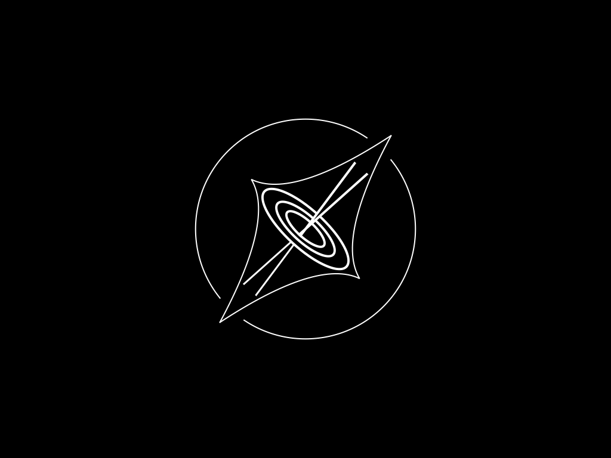

FutureLens is a research collaboration studying the universe in gravitational lensing systems using machine learning.
Explore our work →Somewhere in the distant universe, a supermassive black hole blazes with enough energy to outshine its entire host galaxy. Between that quasar and Earth, a massive galaxy bends spacetime — a gravitational lens that splits the quasar's light into multiple images, each flickering with signals about dark matter, black hole structure, and the expansion history of the universe.
The problem is extracting it. FutureLens is a Schmidt Sciences-funded collaboration building the machine learning infrastructure to decode these tangled signals at scale — ahead of the Vera C. Rubin Observatory's Legacy Survey of Space and Time (LSST).
Our team spans New York City and Montréal, combining expertise in astrophysics, Bayesian inference, simulation-based inference, and deep learning.
Studying black hole accretion, quasar variability, and disk structure via gravitational lensing and machine learning.